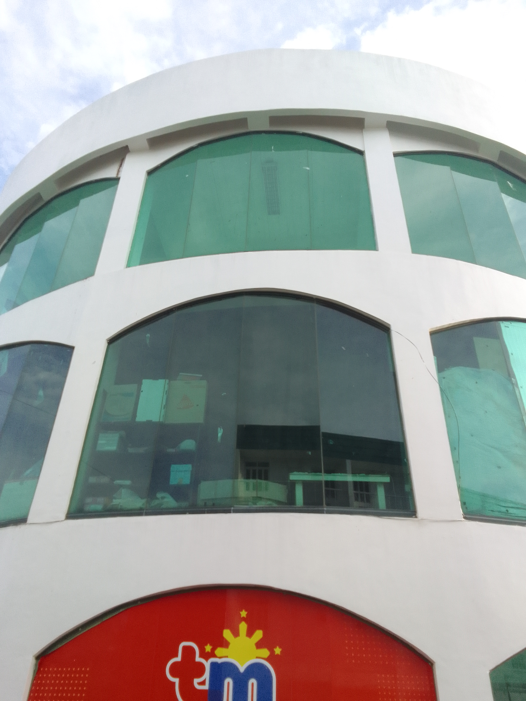
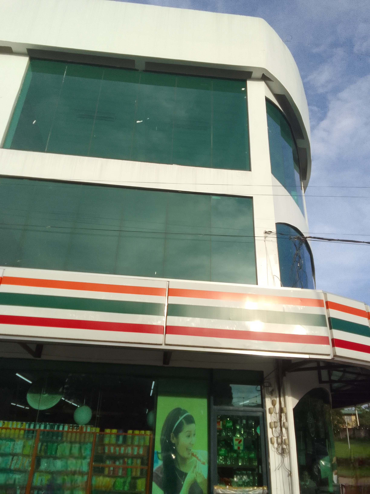
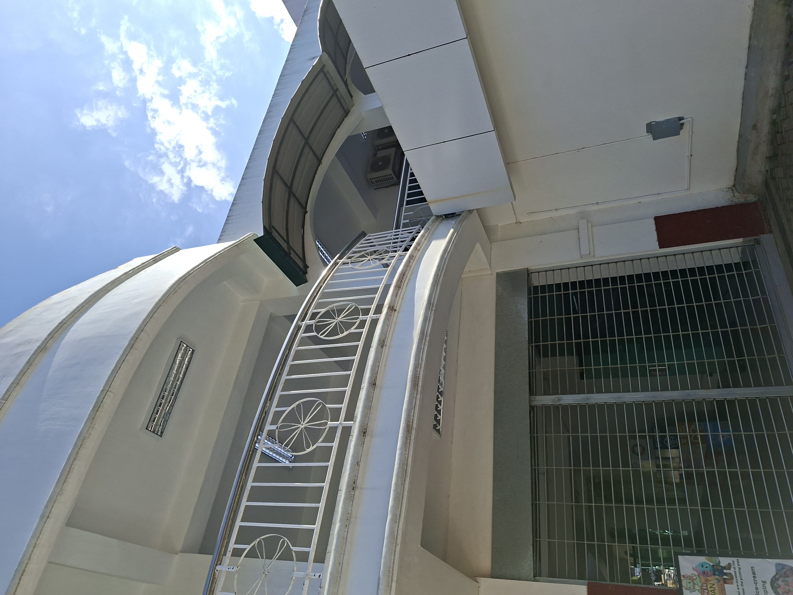
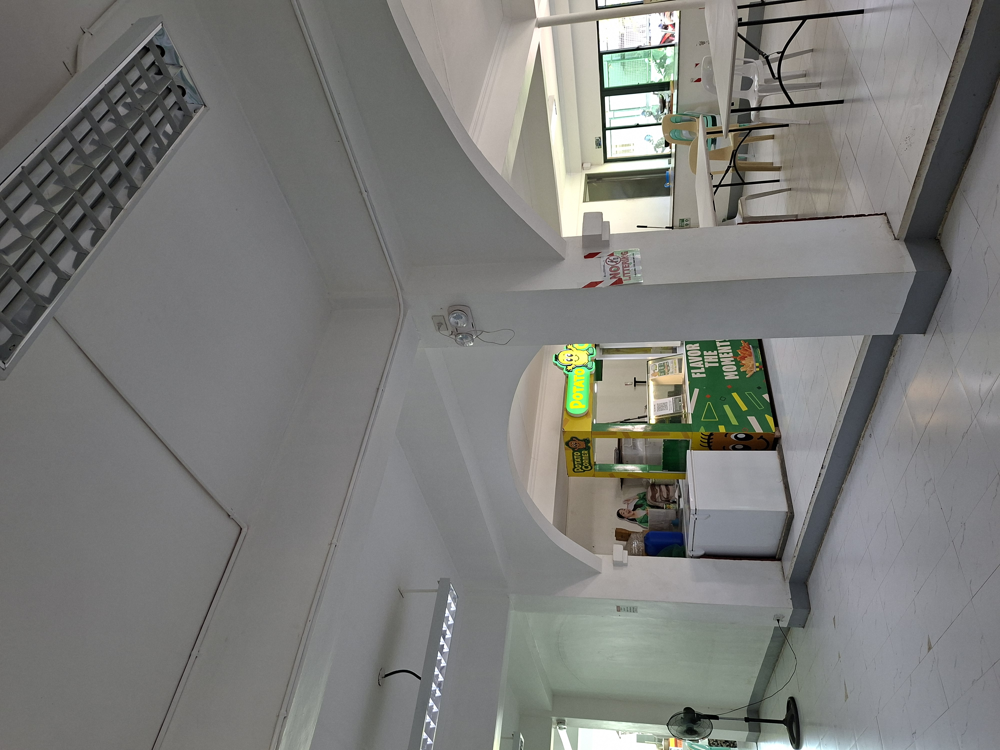

University Mall
The Cavite State University (CvSU) University Mall, located on the main campus in Indang, Cavite, is a commercial space under the Office of the Director of Production and Resource Generation, aiming to serve the campus community with new, non-food, and food tenants. It serves as a vital hub for goods and services.
Some Information
University MallLocation: Cavite State University - Main Campus, Indang, Cavite, 4122 Philippines.
Operation: Soft-opened in October 2024 to serve students and staff with dining and local products.
University Mall
Highlights



